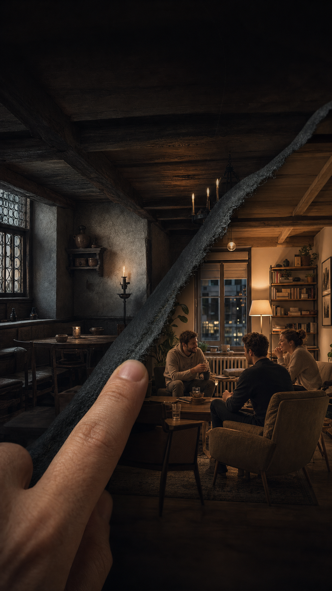

Der erste Schlag
Schwarz. Ein trockener Fingerknöchel auf Holz. Kerzenlicht reagiert auf den Kontakt und legt den Tisch frei.
Zeit unter der Oberfläche
Ein lebendiger Tisch, zwei Zeiten und dieselbe Spannung vor einer Entscheidung.

Der Swipe startet keinen Film. Raum, Licht, Stimmen, Karten und Haptik hängen direkt am Finger und lassen sich vor- und zurückbewegen.
Die Holzmaserung bleibt. Eine Hand setzt. Ein Blick antwortet. Nur die Jahrhunderte verändern, wie dieser Moment klingt und aussieht.
Kurze Inszenierung, danach sofort an den echten Tisch. Jeder Beat vermittelt eine Sache.
Schwarz. Ein trockener Fingerknöchel auf Holz. Kerzenlicht reagiert auf den Kontakt und legt den Tisch frei.
Karten auf Holz, Münzen, Feuer, enges Stimmengewirr. Eine Runde jubelt kurz, eine Person beobachtet statt mitzujohlen.
Der Spieler zieht über dieselbe Tischmaserung. Kerzenschein wird Lampenlicht. Das Bild folgt exakt und reversibel.
Eine Linie im Holz zweigt über Poque zu Poker ab. Die Hauptlinie läuft sichtbar als Poch bis heute weiter.
Der historische Kartenkontakt endet als moderne Kartenbewegung. Hana nimmt den Blick auf und reagiert knapp.
Kein Abschlussdialog. Der erste Einsatz wird erklärt, bevor die Handlungsaufforderung erscheint.
Historisch belastbar
Die Inszenierung zeigt Nähe, ohne eine gerade Abstammung zu behaupten. Poch bleibt ein eigenes dreiphasiges Spiel.
Seit dem 15. Jahrhundert. Eine Wurzel des Pokers. Bis heute ein eigenes Spiel.
Ein Motiv, ein Poch-Schlag und ein menschlicher Atem bleiben konstant. Die Epoche verändert ihre Oberfläche.
Wirtshaus: Feuer, Bank, Becher, nahe Stimmen.
Im Übergang: Raum wird schmal und wandert mit dem Finger.
Heute: leise Stadt, Wohnung, Stoff, Glas.
Wirtshaus: kurzes Johlen nach einem Gewinn.
Im Übergang: derselbe Atem und dieselbe Tonhöhe bleiben.
Heute: das Johlen endet als echtes Lachen am Tisch.
Wirtshaus: sparsames akustisches Zweitakt-Motiv.
Im Übergang: Rhythmus bleibt, Instrumente wechseln.
Heute: entspannte, trockene Lounge-Fassung ohne Vocals.
Wirtshaus: Karte, Münze und Knöchel auf Holz.
Im Übergang: Kontaktzeitpunkt bleibt unverändert.
Heute: Karte, Keramikstein und Finger auf dem Tisch.
Ein historischer Jubel kippt ohne Schnitt in das Lachen der modernen Runde. Der Poch-Schlag bleibt in beiden Räumen identisch.
Das Wirtshaus darf laut sein. Der Moment am Tisch bleibt trotzdem persönlich.
Hana: hält den Blick einen Tick länger, bevor sie auf den Einsatz schaut.
Noah: reagiert auf Mut mit einem kurzen, ehrlichen Lachen.
Jonas: sagt nichts, aber seine Hand stoppt für einen Moment über den Karten.
Historische Runde: keine Doppelgänger. Gesten und Blickachsen spiegeln sich, nicht die Gesichter.
Die Szene ist ein Instrument. Der Finger spielt Zeit, Klang und Material gleichzeitig.
Jeder Fortschrittswert steuert beide Raumklänge, das gemeinsame Motiv und die Position des Poch-Schlags.
Sehr geringe Rauheit wird beim Ziehen glatter. Haptik bleibt optional und respektiert die Einstellungen.
Zurückziehen bringt Wirtshaus, Stimmen und Kerzen sofort zurück. Loslassen setzt weich an der näheren Zeit ein.
Wer nahe der Abzweigung kurz innehält, bekommt die Linie Poque zu Poker lesbar. Niemand muss warten.
Die Geschichte wird im Spielgefühl vermittelt. Text sichert nur die richtige historische Lesart.
Kein „Poker seit 1441“ und kein „Original-Poker“.
Kein modernes Pochbrett als angeblich exaktes Objekt von 1441.
Keine französischen Kartenfarben als ungesicherte Ausstattung der frühen Szene.
Keine Laute, Gauklerstimme oder Fantasy-Portal-Aura als Epochenkürzel.
Keine Pokerchips, kein grüner Filz und keine Casino-Beleuchtung.
Keine Pflichtinformation nur über Audio oder Bewegung.
Kurzer kontrollierter Lichtwechsel ohne Parallaxe oder Zeitsog. Der Stammbaum erscheint statisch.
Der Merksatz und die sichtbare Abzweigung tragen dieselbe Information. Untertitel beschreiben wichtige Raumwechsel.
„Poch wird seit dem 15. Jahrhundert gespielt und gehört zur Vorgeschichte des Pokers. Streiche nach rechts zum heutigen Tisch.“
Ab dem ersten Moment erreichbar. Überspringen landet am identischen ersten Spielzustand.
Ohne externe Videokosten
Wenige hochwertige Ebenen, echte Tiefenstaffelung, Lichtmasken und kurze menschliche Micro-Loops.
Ein Gesture-Progress von 0 bis 1 treibt Szene, Stammbaum und den Übergang in den echten Tisch.
Vorgemischte 96-kHz-Stems werden progressabhängig geblendet. Kein generatives Audio zur Laufzeit.
Zuerst isolierter Prototyp mit Bild, Ton, Haptik und Reduced Motion. Keine Produktionsintegration vor grünem Gerätebeleg.
Übernommen: Das Spiel muss in beiden Zeiten sichtbar sein. Raumklang und menschliche Reaktion tragen mehr als Erklärtext.
Geschärft: Einsatz und Showdown verbinden Poch und Poker, aber Poch bleibt das größere dreiphasige Spiel.
Abgelehnt: leuchtendes Portal, schwebende Goldaura, Pokerchip-Morph und pathetische Sätze über Schicksal oder erwachenden Geist.
Die öffentlich zugänglichen Quellen stützen Poch als altes dreiphasiges Spiel und die enge Linie über Poque zur Entstehung von Poker. Die genaue Entstehung von Poker bleibt eine historische Rekonstruktion.